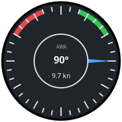
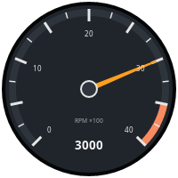
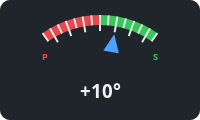
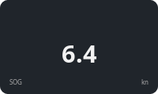
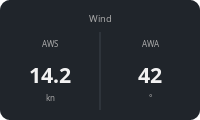
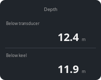
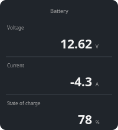
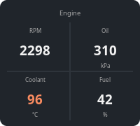

SVG skin instrument

The SVG skin instrument draws an SVG image you supply and moves, recolors and fills in parts of it from up to four Signal K values. The look of the instrument is entirely up to the image, so a new gauge needs no programming, just an SVG drawn by the rules below.
Settings
-
Skin - the skin to draw, picked from the bundled and imported skins. The plugin ships
wind_angle.svg, a sample apparent wind skin. Import… checks the selected SVG file and copies it into thesvgsubfolder of the plugin’s private data folder (DashboardSK_piin OpenCPN’s private data location, e.g.~/.opencpn/plugins/DashboardSK_pi/svgon Linux), where it survives plugin updates. An imported skin with the same file name as a bundled one replaces it. To remove an imported skin, delete its file from that folder. -
Signal K paths feeding the value slots
v0tov3. Only the slots the selected skin actually uses are offered, labelled as the skin names them (see Slot names), otherwise as Value vN key. Paths of slots hidden by the current skin are kept and come back when you switch to a skin using them. -
Label and Unit of a value slot - texts shown next to the value, offered only for slots the skin has a place for (see User text). Leave them empty to show nothing. The instrument Title works the same way in skins showing it.
-
Transformation and Format of a value slot - offered for slots shown as text, they override the skin’s
data-dsk-mulanddata-dsk-fmt(see Text). The unit conversions and number formats are the ones known from the simple number instrument, e.g. m/s → kn with 9.9 shows the speed in knots with one decimal. Leave them at None and Skin default to keep the skin’s. -
Scale minimum / Scale maximum - range of the dial, offered only by skins with an adjustable scale (like the tachometer), in the unit the dial shows (rpm for the tachometer). Set both to the same value to get the skin’s default back.
-
Zones - zones used by the zone color bindings and zone bands, offered only if the skin has some. For the slot with the adjustable scale the zone limits are in the dial’s unit too (e.g.
3500to4000rpm for a red band); for other slots they are in Signal K units. A skin may suggest zones, used while none are configured. -
Instrument size - width in pixels, the height follows the image’s aspect ratio.
If the file can’t be loaded the instrument shows the reason in red instead.
Bundled skins
The skins shipped with the plugin also serve as examples for writing your own.
| Skin | Signal K paths | Shows |
|---|---|---|
|
v0 |
Rotation of an angle in radians, text readouts, zone colored text. |
|
v0 |
Adjustable scale (default 0-4000 rpm) with labels following it, bands
drawn from the zones (default red band 3500-4000 rpm), needle colored by
zones, rpm readout ( |
|
v0 |
Signed angle clamped to ±35°, off-center pivot, non-square image. |
|
any numeric paths, one per value |
Generic boxes with 1, 2 (side by side or stacked), 3 (stacked) or 4 (2×2) numbers, each with an optional label and unit, the optional instrument title on top and zone colored values. Set the transformation and format to convert the Signal K value, e.g. °K → °C and 9 for a temperature. |







When you switch to a different skin, slots without a path get the skin’s
suggested paths, while paths entered for the previous skin stay. Clear a
field to get the suggestion back. The tachometer suggests
propulsion.main.revolutions; adjust the engine id to match your boat.
Authoring rules
The image is rendered by the SVG engine built into wxWidgets, which supports only a subset of SVG:
-
The root
<svg>element must have aviewBox. -
Don’t use
<style>elements or CSS classes,<use>references, filters or embedded images. Inkscape’s Save as plain SVG followed bysvgo --configwithinlineStyles,convertStyleToAttrsandremoveUselessDefsgets most drawings there. -
Set colors and font properties as attributes (
fill="#ff0000"), not instyle="…".
Bindings
Elements are connected to values by data-dsk-* attributes. Each refers to
a value slot v0 to v3. While a slot has no current data, elements bound
to it are shown as drawn.
Slot names
<svg xmlns="http://www.w3.org/2000/svg" viewBox="0 0 200 200"
data-dsk-label-v0="Apparent wind angle"
data-dsk-label-v1="Apparent wind speed"
data-dsk-path-v0="environment.wind.angleApparent"
data-dsk-path-v1="environment.wind.speedApparent">Optional data-dsk-label-v0 … data-dsk-label-v3 attributes on the root
element name the slots in the instrument settings, so users know which
Signal K path to pick for each.
Optional data-dsk-path-v0 … data-dsk-path-v3 attributes suggest a
Signal K path for the slot. It is used whenever the slot’s path is empty:
for a new instrument, after switching to the skin, or when the user clears
the field.
Rotation
<path d="M100 18l7 82h-14z" fill="#4da3ff"
data-dsk-rotate="v0" data-dsk-pivot="100 100"/>-
data-dsk-rotate- rotates the element by the slot value, clockwise. -
data-dsk-pivot="x y"- center of rotation inviewBoxcoordinates, defaults to the center of theviewBox. -
data-dsk-range="in_min in_max deg_min deg_max"- maps the value linearly to an angle, clamped to the range. Without it the value is taken as radians, which suits Signal K angles. Example: a 0-10 kn (0-5.14 m/s) speed gauge sweeping from -135 to 135 degrees usesdata-dsk-range="0 5.14 -135 135".
Draw the element in its zero position; any transform it already has is
kept and applied first.
Text
<text x="100" y="128" font-size="16" fill="#f2f2f2" text-anchor="middle"
data-dsk-text="v1" data-dsk-mul="1.943844" data-dsk-fmt="%.1f kn">---</text>-
data-dsk-text- replaces the text with the slot value, or---without data. -
data-dsk-mul- multiplier applied before formatting, for unit conversion (57.29578radians to degrees,1.943844m/s to knots). -
data-dsk-fmt- printf style format with exactly one number, e.g.%.0f°or%05.1f. Defaults to%.0f; other formats are ignored.
The Transformation and Format settings of the slot, when set, replace
data-dsk-mul and data-dsk-fmt.
User text
<text x="100" y="22" font-size="14" fill="#a8a8a8" text-anchor="middle"
data-dsk-title="1">Title</text>
<text x="12" y="108" font-size="12" fill="#a8a8a8"
data-dsk-caption="v0">Label</text>
<text x="188" y="108" font-size="12" fill="#a8a8a8" text-anchor="end"
data-dsk-unit="v0">Unit</text>-
data-dsk-title- shows the instrument title (the attribute’s value is ignored). -
data-dsk-caption- shows the Label setting of the slot. -
data-dsk-unit- shows the Unit setting of the slot.
Empty settings leave the element empty, so it’s simply not drawn; the rest of the drawing stays where it is. The text in the file is always replaced, so it’s only a placeholder for editing. Don’t leave the elements empty, svgo removes empty text.
Text, bound or static, is drawn by the plugin on top of the image, using
only the x, y, font-size, font-weight, fill and text-anchor
attributes of the <text> element. Text must not be placed inside a
transformed group.
Zone colors
data-dsk-zone-fill and data-dsk-zone-stroke replace the element’s fill
or stroke with the alert, warning, alarm or emergency color when the slot
value falls into one of the configured zones. Outside the zones the color
from the image is used. Both work on text as well.
Adjustable scale
<svg ... data-dsk-scale="v0" data-dsk-scale-range="0 4000"
data-dsk-scale-mul="60" data-dsk-zones="3500,4000,alarm">
<path d="..." data-dsk-rotate="v0" data-dsk-sweep="-135 135"/>
<text x="..." y="..." data-dsk-tick=".25" data-dsk-mul="0.01">10</text>
<path d="..." fill="none" stroke="#2e343b" stroke-width="8"
data-dsk-zone-arc="v0" data-dsk-radius="86" data-dsk-sweep="-135 135"/>
</svg>-
data-dsk-scaleon the root names the slot whose range the user can set,data-dsk-scale-range="min max"is the default range anddata-dsk-scale-mulconverts the Signal K value to the unit of the range (60for Hz to rpm). The Scale settings and, for this slot, the zones are in that unit.data-dsk-scale-stepsets the step of the Scale settings, which also decides how many decimals they show (0.1for one). It defaults to a power of ten around a hundredth of the range, e.g.10for 0-4000 or0.01for 0-2.5. -
data-dsk-sweep="deg_min deg_max"- likedata-dsk-range, but maps the configured scale onto the angles, so the needle follows the settings. -
data-dsk-tick="fraction"on a<text>- shows the scale value at that fraction (0minimum,1maximum), with the optionaldata-dsk-mulanddata-dsk-fmt. Put labels where the values come out round for the scales your users are likely to set, e.g. quarters. -
data-dsk-zone-arcon a<path>- for each configured zone other than nominal, an arc in the zone’s color is drawn on top of the element atdata-dsk-radiusarounddata-dsk-pivot, spanning the zone mapped bydata-dsk-sweep(ordata-dsk-range), with the element’sstroke-width. The element itself is drawn as authored, e.g. as a background track. -
data-dsk-zoneson the root suggests zones in the same format as the instrument setting:lower,upper,statetriplets separated by;.